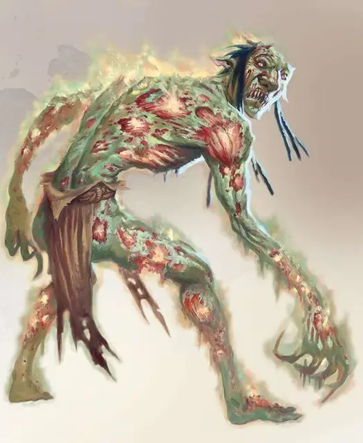

Гнилой тролль
Rot Troll
Большой Великан, хаотично-злой

Класс Доспеха 16 (природный доспех)
Хиты 138 (12к10 + 72)
Скорость 30 футов
| мод | спас | ||
|---|---|---|---|
| СИЛ | 18 | +4 | +4 |
| ЛОВ | 13 | +1 | +1 |
| ТЕЛ | 22 | +6 | +6 |
| мод | спас | ||
|---|---|---|---|
| ИНТ | 5 | −3 | −3 |
| МДР | 8 | −1 | −1 |
| ХАР | 4 | −3 | −3 |
Навыки Восприятие +3
Иммунитет к урону некротическая энергия
Чувства тёмное зрение 60 футов, пассивное Восприятие 13
Языки Великаний
Опасность 9 (5000 опыта)
Бонус мастерства +4
Среда обитания Болото, Лес, Подземье, Пустыня
Особенности
Гнилостное разложение. В конце каждого хода тролля каждое существо в пределах 5 фт. от него получает 11 (2к10) урона некротической энергией, если тролль не получал урона огнём или кислотой на этом ходу.
Действия
Мультиатака. Тролль совершает три атаки: одну укусом и две когтями.
Укус. Рукопашная атака оружием: +8 к попаданию, досягаемость 5 фт., одна цель. Попадание: 7 (1к6 + 4) колющего урона плюс 16 (3к10) урона некротической энергией.
Когти. Рукопашная атака оружием: +8 к попаданию, досягаемость 5 фт., одна цель. Попадание: 11 (2к6 + 4) рубящего урона, плюс 5 (1к10) урона некротической энергией.
Описание
Тролли, что после уничтожения смогли выжить и восстановить раны на своём теле, проявляют аномальные мутации. Часто подобные искаженные тролли появляются, если существо восстанавливается в присутствии магического излучения, планарной энергии, заболеваний, смертей в широких масштабах, или если тело было повреждено элементальными силами.
Этих мутированных созданий также можно получить и сформировать с помощью обрядной магии злых заклинателей.
Гнилой тролль. Рано или поздно, у гнилого тролля пропадает способность к регенерации, хотя заживление всё ещё проходит нормально. Из существа излучается некротическая энергия, текущая внутри его сморщенной туши. Просто находясь рядом с гнилым троллем, другие существа подвергаются его смертоносному излучению.